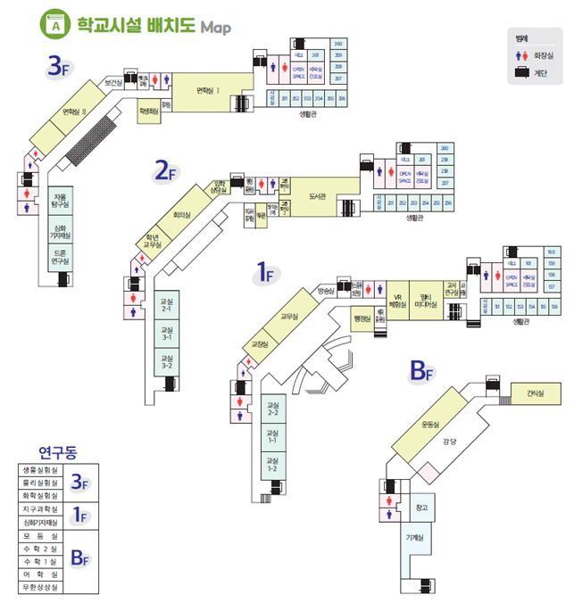

내가 어제 그린 지도는 아마 이 지도가 맞을 지도...
TEAM 대동ㅇㅈ도
About
SchoolMap
JSHS
TMI

- 웹사이트에서 직접 제작한 뷰어를 통해 360도 관찰이 가능하며, 학교 내 원하는 장소의 확대와 축소 보기가 가능하다.
- 스트리트 뷰 이미지 내 해당 장소마다 명칭을 명시해주어 어떤 용도의 장소인지 알기 쉽게 하였다.
- 좌측 상단의 메뉴를 통해 제주과학고등학교 홈페이지로 바로 이동할 수 있도록 하였다.